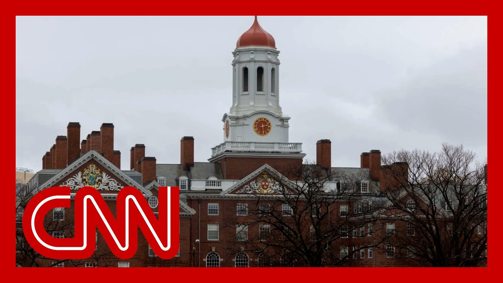

【Trump administration revokes Harvard from enrolling any international students】
Summary: Breaking news: The Trump administration has revoked Harvard University's ability to enroll international students, forcing current ones to transfer and barring new admissions, escalating tensions between the White House and Harvard.
摘要： 突发新闻：特朗普政府取消哈佛大学招收国际学生的资格，要求现有国际学生转学并禁止新录取，加剧了白宫与哈佛之间的紧张关系。

⏱️ Estimated Reading Time: 13 min
We do have breaking news now.
我们确实有突发新闻。
The Trump administration has just revoked Harvard University's ability to enroll any any international students.
特朗普政府刚刚取消了哈佛大学招收任何国际学生的资格。
The existing international students there have to transfer out and no new ones can be accepted in.
现有的国际学生必须转学，且不再接受新生。
This marks a sharp escalation in the ongoing battle between the white House and the nation's oldest university.
这标志着白宫与这所美国最古老大学之间持续斗争的急剧升级。
CNN's Jeff Zeleny is at the white House.
CNN的杰夫·泽莱尼正在白宫。
Jeff, tell us what's happening here.
杰夫，告诉我们这里发生了什么。
Well, Brianna and Boris, there has been an ongoing fight between the white House and Harvard University over the curriculum, over the federal funding, and now over international students.
布里安娜和鲍里斯，白宫和哈佛大学一直在课程设置、联邦资金以及现在的国际学生问题上存在争执。
As you said, this is a dramatic escalation.
正如你所说，这是一次戏剧性的升级。
We are learning this announcement from the Department of Homeland Security Secretary Kristi Noem, making the announcement this afternoon.
我们从国土安全部部长克里斯蒂·诺姆今天下午的声明中得知这一消息。
Essentially giving a warning to Florida that they are no longer allowed to admit international students.
实质上是在警告佛罗里达州，他们不再被允许招收国际学生。
As she writes this, in part, they have lost their student and exchange visitor program certification as a result of their failure to adhere to the law.
她在声明中写道，部分原因是他们因未能遵守法律而失去了学生和交流访问者项目认证。
She says, let this serve as a warning to all universities and academic institutions across the country.
她说，让这成为全国所有大学和学术机构的警告。
So let's break that down a touch.
让我们稍微分析一下。
she's accusing them, Harvard University University, of failing Of course, there were some, rules essentially, that were put out as a, strings, if you will, on federal funding for what type of a curriculum? universities, could use, what type of D-I programs they could and couldn't have.
她指责哈佛大学未能遵守某些规则，这些规则本质上是联邦资金的条件，涉及课程类型和允许或禁止的D-I项目。
Of course, this all stems from, protests on college campuses.
当然，这一切源于大学校园的抗议活动。
Harvard University is pushing back very hard at this.
哈佛大学对此强烈反对。
Just a statement coming out just a few moments ago.
就在几分钟前发布的一份声明。
Harvard is, is saying that they will, challenge this.
哈佛表示他们将对此提出法律挑战。
So legally as well.
同样在法律层面。
And they go on to say this, the government's, action is unlawful.
他们进一步表示，政府的行动是非法的。
Harvard says we are fully committed to maintaining Harvard's ability to host international students and scholars who hail from more than 140 countries and enrich the university and this nation immeasurably.
哈佛表示，我们全力致力于维持哈佛接待来自140多个国家的国际学生和学者的能力，他们极大地丰富了大学和国家。
So how many students are we talking about here?
那么我们在这里讨论多少学生？
Well, in this academic year alone, almost 30% of Harvard's a student body, were made up of international students, as some as, 6793, according to this year's academic record.
仅在本学年，哈佛学生中近30%是国际学生，根据今年的学术记录，约有6793人。
So the the government is saying that these students must transfer.
因此，政府表示这些学生必须转学。
We were told that they are likely to be able to transfer to another U.S. institution, not necessarily, return to their home countries.
我们被告知，他们可能会转到美国的另一所机构，而不一定返回自己的国家。
But of course, this will be, one of the many, actions of this administration that will be challenged legally, but certainly, once again, a dramatic escalation from the U.S. government against Harvard or some.
当然，这将是本届政府众多将受到法律挑战的行动之一，但无疑再次是美国政府对哈佛的戏剧性升级。
Brianna, certainly, as Jeff Zeleny, thank you.
布里安娜，当然，杰夫·泽莱尼，谢谢。
And with us now to discuss is Ryan Enos, the professor of government at Harvard University.
现在与我们讨论的是哈佛大学政府学教授瑞安·伊诺斯。
He's also a member of Harvard's chapter of the American Association of University Professors, which is currently suing the Trump administration.
他还是哈佛大学美国大学教授协会分会的成员，该协会目前正在起诉特朗普政府。
professor, thank you for being with us.
教授，感谢您与我们在一起。
this, a decision that Harvard can no longer enroll foreign students and existing foreign students have to transfer or lose their legal status.
这一决定使哈佛不能再招收外国学生，现有外国学生必须转学或失去合法身份。
what's your reaction to this?
您对此有何反应？
I think it's awful and it's outrageous.
我认为这很糟糕且令人愤慨。
It's another pattern of the Trump administration taking authoritarian actions in the United States.
这是特朗普政府在美国采取威权行动的又一模式。
The president does not have the power to punish people, target people for punishment because he doesn't like their politics.
总统无权因为不喜欢某人的政治立场而惩罚或针对他们。
And he's targeted Harvard because he thinks he politically disagrees with them.
他针对哈佛是因为他认为自己在政治上与他们意见不合。
It's a political vendetta.
这是一场政治报复。
And he's doing this on the back of students who were admitted to Harvard from around the world for their merit, for things that they accomplished in life.
他这样做是利用那些凭借自身成就被哈佛录取的全球学生。
And now he's trying to punish them, to hold them hostage, essentially, and essentially to try to win what he considers to be this political fight with Harvard, that that's what authoritarians do, is not done by the rule of law.
现在他试图惩罚他们，实质上将他们作为人质，试图赢得他认为与哈佛的政治斗争，这是威权者的做法，而非法治。
Secretary Noam says the administration is holding Harvard accountable for fostering violence, anti-Semitism and coordinating with the Chinese Communist Party on its campus.
诺姆部长表示，政府因哈佛助长暴力、反犹太主义及与中国共产党在校园内协调而追究其责任。
What do you say to that?
您对此有何回应？
I see you shaking your head.
我看到您在摇头。
Yeah.
是的。
I mean, I could shake my head all day against those things.
我的意思是，我可以整天对这些事情摇头。
I would ask them what violence they're pointing to, what anti-Semitism they're pointing with, what coordination Party to point to.
我会问他们指的是什么暴力，什么反犹太主义，什么与党的协调。
These are outrageous statements.
这些是令人愤慨的声明。
And I think it's become increasingly clear that the public doesn't believe these.
我认为越来越明显的是，公众不相信这些。
The American public doesn't believe this.
美国公众不相信这一点。
And and they're leveling these outrageous claims to try to win this political battle and that in in a certain respect, I think we see this pattern with them.
他们提出这些荒谬的指控是为了赢得这场政治斗争，在某种程度上，我们看到他们这种模式。
It doesn't matter whether these accusations they are making are true.
他们提出的这些指控是否真实并不重要。
They're all a pretext of, a pretext for this, trying to punish Harvard and punish other universities as a way to bring them under their control.
这些都是借口，试图惩罚哈佛和其他大学，以将其置于他们的控制之下。
And as I said earlier, that is what authoritarians do is not the way things should be done
正如我之前所说，这是威权者的做法，不是事情应有的方式。
Some some of this may come down to what particular free speech may be allowed.
其中一些可能归结为允许何种特定的言论自由。
But this Secretary is also citing Harvard's own report.
但这位部长还引用了哈佛自己的报告。
Harvard released two reports last month on anti-Israel bias, and there was another one on anti-Muslim, anti-Arab and Anti-Palestinian bias, finding in part that Jewish students had faced bias, suspicion, intimidation, alienation, shunning, contempt and sometimes affective exclusion from various curricular and co-curricular parts of the university community.
哈佛上个月发布了两份关于反以色列偏见的报告，另一份关于反穆斯林、反阿拉伯和反巴勒斯坦偏见的报告，部分发现犹太学生在大学社区的课程和课外活动中面临偏见、怀疑、恐吓、疏远、回避、蔑视，有时甚至是情感排斥。
It also found that Arab, Muslim and Palestinian students and faculty who voiced concern over rising death tolls in Gaza and the unfolding humanitarian crisis there, overwhelmingly felt abandoned, and some believed they were actively silenced by Harvard administrators.
报告还发现，对加沙不断上升的死亡人数和正在发生的人道主义危机表示关切的阿拉伯、穆斯林和巴勒斯坦学生和教职员工普遍感到被抛弃，一些人认为哈佛管理人员积极压制他们的声音。
what work do you think Harvard has to do, on these issues?
您认为哈佛在这些问题上需要做哪些工作？
You know, Harvard is a big, diverse place, bringing people together from across the world, and from different communities across the United States and putting them in a place where they live together, and they study together and they work together.
哈佛是一个庞大而多样化的地方，汇集了来自世界各地和美国不同社区的人们，让他们生活、学习和工作在一起。
And then when things happen in the world, like happened in Gaza and happened in Israel, are going to touch our community.
当世界上发生诸如加沙和以色列的事件时，会触动我们的社区。
And of course, people are just going to disagree.
当然，人们会有分歧。
And sometimes this can lead to things that shouldn't happen, like shunning and like, you know, people yelling at each other, whatever type of things we want to cite in those reports, and those are things we need to sort out and we need to we need to make happen less because we're an academic community.
有时这会导致一些不应发生的事情，如回避或互相吼叫，无论报告中提到什么，这些都是我们需要解决并减少的事情，因为我们是一个学术社区。
And ultimately we should be trying to construct, find constructive ways to bridge our disagreements.
最终，我们应该尝试构建并找到建设性的方法来弥合分歧。
They are not the type of things that would lead to some kind of extreme response, like banning international students, which I should mention would include Israeli students from coming to Harvard.
这些不是会导致某种极端反应的事情，如禁止国际学生，我应指出这包括以色列学生来哈佛。
That doesn't make people agree.
这不会让人们达成一致。
It doesn't make these issues of disagreement that happen in a diverse community go away.
它不会让多样化社区中发生的分歧问题消失。
And so we'll keep working on those things at Harvard.
因此，我们将在哈佛继续努力解决这些问题。
That's part of what makes Harvard a great institution, is we find ways to constructively deal with our differences, which we do have.
这是哈佛成为伟大机构的一部分，我们找到建设性的方式处理我们确实存在的分歧。
But it's not the type of thing that will be solved by authoritarian attacks on our international students.
但这并不是通过对我们国际学生的威权攻击来解决的事情。
the administration is making it clear here that part of, you know, this punishment is about a financial effect on Harvard, that foreign students, and pay higher tuition payments, says helped pad multi-billion dollar endowments.
政府明确表示，这种惩罚部分是对哈佛的财务影响，外国学生支付更高的学费，据称帮助填补数十亿美元的捐赠基金。
What do you think that the administration is trying to do here financially to Harvard?
您认为政府在这里试图对哈佛做什么财务上的事情？
They're looking for another way to punish Harvard.
他们在寻找另一种惩罚哈佛的方式。
you know, foreign students, they don't just contribute to Harvard because of the money they bring into tuition.
外国学生不仅仅因为学费而对哈佛做出贡献。
And we should be very clear about that.
我们应该非常清楚这一点。
They they they contribute to Harvard because these are the best students in the world that are coming to the United States and bringing their talents in a way that benefits not just Harvard, but the American people.
他们为哈佛做出贡献是因为这些是世界上最好的学生，他们来到美国，以不仅有益于哈佛，而且有益于美国人民的方式带来他们的才能。
And they make our community richer.
他们使我们的社区更加丰富。
Many of them, through their intellectual contributions, many of them stay in the United States and help our economy and help our communities.
他们中的许多人通过智力贡献留在美国，帮助我们的经济和社区。
And what the Trump administration is ultimately trying to do is take that away, not just from Harvard, but from the American people that these foreign students benefit.
特朗普政府最终试图剥夺的不仅是哈佛，还有这些外国学生造福的美国人民。
This is one of the great things about the United States is that people come from all over the world to study here.
这是美国的伟大之处之一，人们从世界各地来这里学习。
It's an incredible blessing, and it's something that no other country has where the smartest people in the world come to our institutions to study.
这是一种不可思议的祝福，也是其他国家所没有的，世界上最聪明的人来我们的机构学习。
And ultimately, that punishment isn't just going to Harvard.
最终，这种惩罚不仅仅是针对哈佛。
It's going to the United States has taken away a great resource that has built up through these universities like Harvard.
它针对的是美国，剥夺了通过哈佛等大学建立起来的伟大资源。